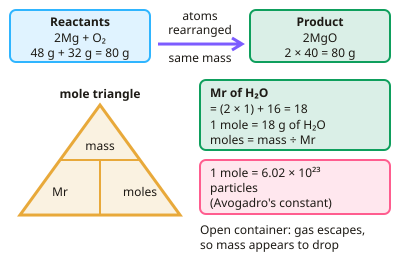

GCSE Chemistry · Topic 3
Quantitative chemistry
Quantitative chemistry is the maths of chemistry: how much of each substance reacts, and how much product you can make.
We will work with relative formula mass, moles, balanced equations and ionic equations, empirical formulae, concentration and gas volumes.
Then we use limiting reactants, percentage yield and atom economy to judge how efficient a reaction is.
- 7 subtopics
- 375 questions
- Free: 3.1 notes and 10 questions
In this topic
- 3.1Conservation of mass and the moleFree below · 59 questions
- 3.2Reacting masses, concentration and yieldOpen in Full Marks · 62 questions
- 3.3Relative formula mass, percentage composition and empirical and molecular formulaeOpen in Full Marks · 47 questions
- 3.4Writing and balancing chemical equations, state symbols and ionic equationsOpen in Full Marks · 43 questions
- 3.5Limiting reactants and using moles to balance equationsOpen in Full Marks · 52 questions
- 3.6Atom economyOpen in Full Marks · 56 questions
- 3.7Molar volume and calculations involving gasesOpen in Full Marks · 56 questions
3.1 · Free notes
Conservation of mass and the mole

Key points
- Mass is conserved in chemical reactions: total mass of reactants equals total mass of products, since atoms are rearranged, not created or destroyed.
- Relative formula mass (Mr) is the sum of the relative atomic masses in a formula.
- The mole is a unit for amount of substance; one mole of any substance contains 6.02 × 10²³ particles (Avogadro's constant).
- Moles = mass (g) ÷ Mr — used with balanced equations to calculate reacting masses.
- If a reaction produces a gas in an open container, the measured mass may appear to decrease as the gas escapes, even though mass is conserved overall.
In more detail
- Worked moles: 8.8 g of CO₂ (Mr 44) = 8.8 ÷ 44 = 0.20 mol, which contains 0.20 × 6.02 × 10²³ = 1.2 × 10²³ molecules.
- Mass increase example: when magnesium burns in air, the product is heavier than the magnesium because oxygen atoms from the air have been added.
- Closed system: in a sealed flask the total mass stays the same even if a gas is made, because nothing can escape.
- Uncertainty: the range of repeat readings shows the spread; uncertainty is often given as ± half the range.
Practice
Conservation of mass and the mole: 10 questions
Pick an answer to check it, or open the answer for the explanation.
1. What is relative formula mass?
- The mass of one mole in kg
- The sum of relative atomic masses in a formula
- The number of atoms in a compound
- The mass of a single atom
Show answer
B: The sum of relative atomic masses in a formula. Add up the relative atomic masses of every atom shown in the formula.
2. How many particles are in one mole of a substance?
- 6.02 × 10²³
- 1000
- 22.4
- 6.02 × 10⁻²³
Show answer
A: 6.02 × 10²³. This is Avogadro's constant.
3. What is the relative formula mass of water, H₂O? (H = 1, O = 16)
- 16
- 17
- 18
- 20
Show answer
C: 18. (2 × 1) + 16 = 18.
4. How many moles are in 22 g of CO₂? (Mr = 44)
- 0.5
- 1
- 2
- 22
Show answer
A: 0.5. moles = mass ÷ Mr = 22 ÷ 44 = 0.5.
5. Why does the measured mass appear to decrease when a gas is produced in an open flask?
- Mass is destroyed
- The gas escapes into the air
- Atoms disappear
- The reaction isn't real
Show answer
B: The gas escapes into the air. The mass of the escaped gas is no longer in the container, but no mass is actually lost overall.
6. What is the Mr of CO₂? (C = 12, O = 16)
- 28
- 32
- 44
- 48
Show answer
C: 44. 12 + (2 × 16) = 44.
7. What is the relative formula mass (Mr) of calcium hydroxide, Ca(OH)₂? (Ca = 40, O = 16, H = 1)
- 74
- 58
- 97
- 57
Show answer
A: 74. The bracket multiplies O and H by 2: 40 + 2×(16 + 1) = 74. Forgetting the bracket gives 57.
8. How many moles are in 36 g of water, H₂O? (Mr = 18)
- 0.5 mol
- 2 mol
- 18 mol
- 648 mol
Show answer
B: 2 mol. Moles = mass ÷ Mr = 36 ÷ 18 = 2 mol. Dividing the other way round gives 0.5 mol.
9. What mass of sodium hydroxide, NaOH, is 0.25 mol? (Mr = 40)
- 10 g
- 160 g
- 6.25 g
- 0.25 g
Show answer
A: 10 g. Mass = moles × Mr = 0.25 × 40 = 10 g. Dividing 40 by 0.25 wrongly gives 160 g.
10. How many molecules are there in 2 mol of oxygen gas, O₂?
- 2.41 × 10²⁴
- 3.01 × 10²³
- 1.20 × 10²⁴
- 6.02 × 10²³
Show answer
C: 1.20 × 10²⁴. Particles = moles × 6.02 × 10²³ = 2 × 6.02 × 10²³ = 1.20 × 10²⁴ molecules. The question asks about molecules, not atoms.
Keep going in Full Marks
Full Marks has 59 questions on Conservation of mass and the mole (49 more than here), set out in practice levels. You also get notes and 3D models for all 7 subtopics of Quantitative chemistry, plus games, timed exams and past papers.
On your exam board
- AQATopic 3: Quantitative chemistry
- OCR ATopic C3: Chemical reactions, Topic C5: Monitoring and controlling chemical reactions
- OCR BTopic C1: Air and water, Topic C5: Chemical analysis, Topic C6: Making useful chemicals
- EdexcelTopic 1: Key concepts in chemistry, Topic 5: Separate chemistry 1
- CambridgeTopic 3: Stoichiometry